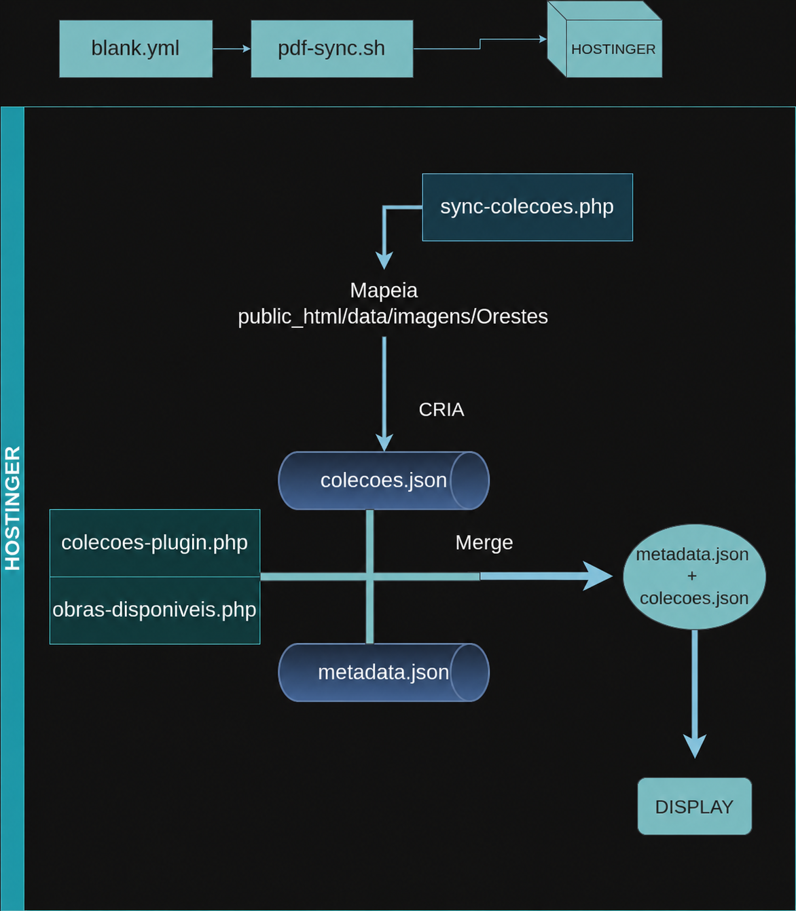

Olá, meu nome é Iezam.
Atualmente minha especialidade é focada no PHP, Wordpress e automação.
Tecnologias
- PHP
- WordPress
- HTML
- CSS
- APIs
- JSON
- Cron Jobs
- Bash Script
Tenho maior afinidade com automações backend e integração de sistemas.
O projeto consiste em um pipeline automatizado de coleta, organização e exibição de dados para páginas de uma galeria de arte.
A estrutura também inclui um sistema de metadata responsável por adicionar informações descritivas às obras processadas.
O diagrama abaixo representa o pipeline automatizado desenvolvido para busca, organização e exibição de dados, utilizando scripts, plugins e bibliotecas como poppler-utils e rclone.

Workflow e sincronização
O arquivo blank.yml representa o workflow automatizado iniciado periodicamente por cron jobs.
O workflow instala dependências e executa o script pdf-sync.sh, responsável pela sincronização entre Google Drive e Hostinger.
Processamento de PDFs
Informações essenciais das obras são extraídas automaticamente através da ferramenta pdfimages.
Geração de coleções
O script sync-colecoes.php atua como construtor do arquivo colecoes.json através do mapeamento dos dados localizados em public_html/data/imagens/Orestes.
Integração de metadata
Os plugins colecoes-plugin.php e obras-disponiveis.php realizam integração entre metadata.json e colecoes.json através de loops e operações de merge.
Os dados processados são utilizados para exibição dinâmica nas páginas da galeria.
Os resultados do plugin colecoes-plugin.php está sendo exibido no vídeo abaixo